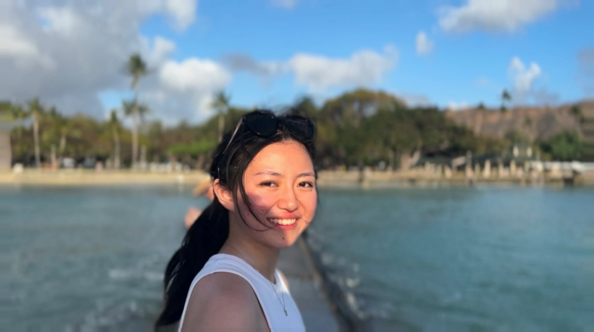
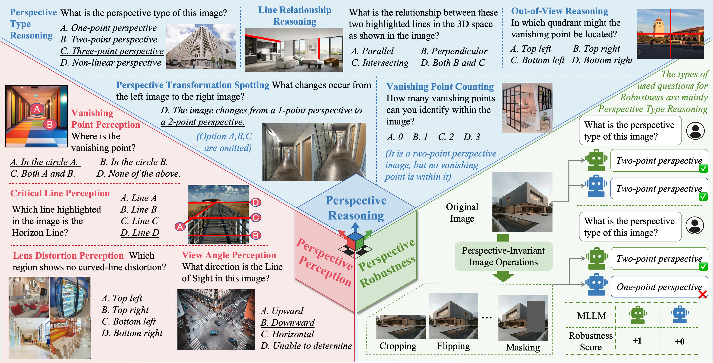

|
I am a junior student majoring in Computer Science at University of Rochester, under the supervision of Prof. Chenliang Xu.
Currently, I am interested and working on multimodal learning.
Email /
Github /
CV
|

|
| [1/2025] |
I joined Prof. Chenliang Xu's lab as an undergraduate research assistant :) |
[5/2025] |
I was awarded a CS Discover Grant to support my summer research in 2025! |
|

|
MMPerspective: Do MLLMs Understand Perspective? A Comprehensive Benchmark for Perspective Perception, Reasoning, and Robustness
Yunlong Tang*, Pinxin Liu*, Mingqian Feng*, Zhangyun Tan*, Rui Mao*, Chao Huang, Jing Bi, Yunzhong Xiao, Susan Liang, Hang Hua, Ali Vosoughi, Luchuan Song, Zeliang Zhang, Chenliang Xu
NeurIPS 2025
Introducing MMPerspective, a comprehensive benchmark for MLLMs on perspective understanding.
|
|
CCVL Lab @ Johns Hopkins University
Research Assistant
July. 2025 - Present
|
|
DeepBlue AI
NLP Algorithm Intern
Jul. 2023 - Jan. 2024
|
|
I was a sailing athlete, and the ocean brings me unparalleled peace. My interest in AI began with AlphaGo, an AI system based on the ancient game of Go.
"I would rather have questions that can't be answered than answers which can't be questioned."
|
|
{kind=link}